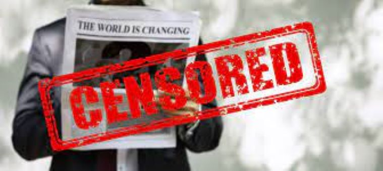

News Censorship in North Korea
The news is heavily governed by the North Korean Government. North Korean citizens do not have the right to freedom of press. In Reporters Without Border's Press Freedom Index North Korea has been ranked within the bottom 5 countries since 2007. The main content of the news reported in North Korea consists of praises idolization of the Kim dynasty and downfalls and propaganda against other countries. Journalist are not able to include any information that would be considered to be their own commentary on any events happening in the country.
Two North Korean News Stations
There are only two news sources that are allowed to be distributed in North Korea. These two sources are:
Korean Central News Agency
The Korean Central News Agency is the national news service of North Korea. The KCNA was founded in 2010. The purpose of the KCNA is to publish news on the country's leader Kim Jong Un. The KCNA is available to the nation's citizens as well as visitors and is available in six different languages.
Rodong Sinmun
Rodong Sinmun is the national newspaper for North Korea. Most of the information published in the Rodong Sinmun comes from the KCNA.